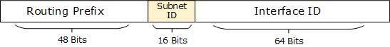

IPv6 - Subnetting
In IPv4, addresses were created in classes. Classful IPv4 addresses clearly define the bits used for network prefixes and the bits used for hosts on that network. To subnet in IPv4, we play with the default classful netmask which allows us to borrow host bits to be used as subnet bits. This results in multiple subnets but less hosts per subnet. That is, when we borrow host bits to create a subnet, it costs us in lesser bit to be used for host addresses.
IPv6 addresses use 128 bits to represent an address which includes bits to be used for subnetting. The second half of the address (least significant 64 bits) is always used for hosts only. Therefore, there is no compromise if we subnet the network.

16 bits of subnet is equivalent to IPv4’s Class B Network. Using these subnet bits, an organization can have another 65 thousands of subnets which is by far, more than enough.
Thus routing prefix is /64 and host portion is 64 bits. We can further subnet the network beyond 16 bits of Subnet ID, by borrowing host bits; but it is recommended that 64 bits should always be used for hosts addresses because auto-configuration requires 64 bits.
IPv6 subnetting works on the same concept as Variable Length Subnet Masking in IPv4.
/48 prefix can be allocated to an organization providing it the benefit of having up to /64 subnet prefixes, which is 65535 sub-networks, each having 264 hosts. A /64 prefix can be assigned to a point-to-point connection where there are only two hosts (or IPv6 enabled devices) on a link.